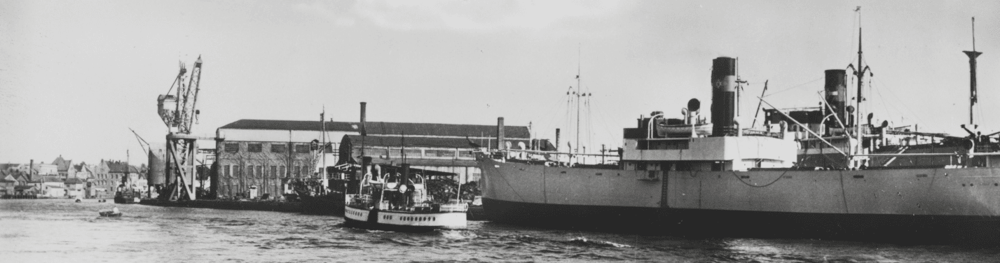
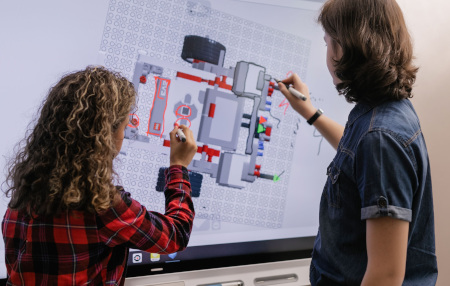
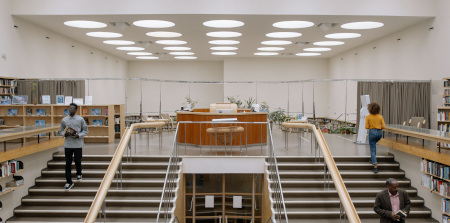

Contact UsAbout Us
Fredrikstad Technical Museum is a community science museum dedicated to preserving and sharing Fredrikstad's rich industrial heritage while inspiring future generations through science, technology, engineering, and innovation. Rooted in the history of Fredrikstad Mekaniske Verksted and the city's maritime traditions, the museum connects the past with the present through interactive exhibitions, hands-on learning, experiments, and historical collections.
Our museum is a place where history meets science and discovery. Families, schools, researchers, volunteers, and industry come together to explore how technology and engineering have shaped Fredrikstad, understand the world around us, and imagine what the future could look like. Through exhibitions, educational programmes, workshops, and community events, we encourage curiosity, creativity, critical thinking, and lifelong learning.
Working with volunteers
Our museum is made possible through the passion and dedication of volunteers. Whether you enjoy sharing local history, helping with events, maintaining collections, or supporting educational activities, there are many ways to get involved. Volunteers are an essential part of our community, helping preserve Fredrikstad's industrial heritage for future generations.
Volunteers are an essential part of our community, helping preserve Fredrikstad's industrial heritage while creating engaging experiences for today's visitors and future generations. By sharing their knowledge, skills, and enthusiasm, our volunteers help bring the museum's history, science, and engineering to life.
Interested in joining our team? Regsiter here
Working with Universities
The museum works closely with universities, colleges, and educational institutions, with a particular focus on engineering and technology programmes.

Together, we support student projects, research, internships, and collaborative initiatives that connect historical engineering with modern innovation.
These partnerships help bridge the gap between education, industry, and the community while inspiring the next generation of engineers and scientists.
Become PartnerArchives and Research Library
The museum is also home to an archive and research library dedicated to Fredrikstad's industrial and maritime history.
Our collections include photographs, drawings, technical documents, maps, publications, and historical records that support academic research, local history, genealogy, and heritage projects.

Researchers, students, and anyone with an interest in the city's industrial past are welcome to explore these resources by appointment.
Make Appointment